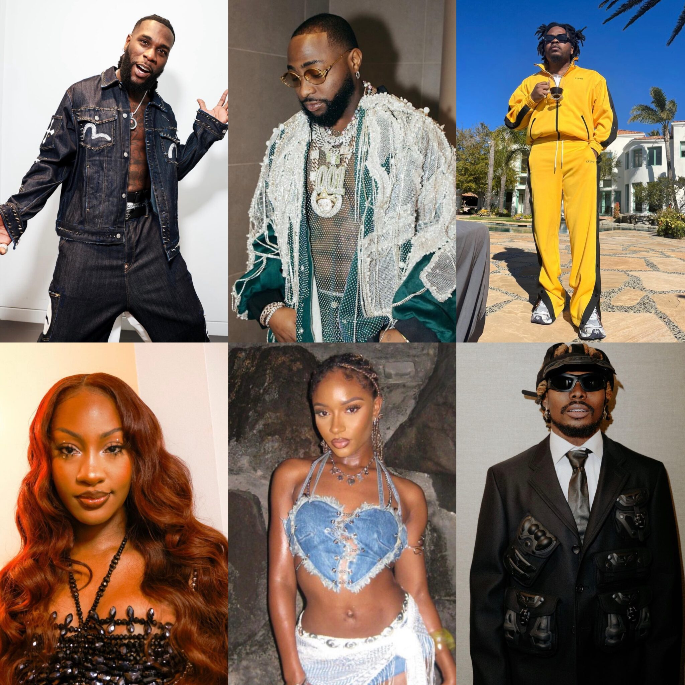

List of African Artists Grammy nominations and their categories:
The Nigerian Artistes Nominated for the 2024 Grammys
Click play to watch the video:
Nigerian artists and Afrobeats continued their collaborative global ascent in the music industry with the recently released Grammy Awards nominations list.
Eight Nigerian artists bagged nominations in different categories of the highly coveted award.
Burna Boy received nominations for “Sittin’ On Top Of The World” for Best Melodic Rap Performance, “I Told Them…” for Best Global Music Album, “Alone” for Best Global Music Performance, and “City Boys” for Best African Music Performance.
Davido bagged nominations for Best Global Album for his comeback album, “Timeless”, Best African Performance for his global hit song “Unavailable”, and Best Global Music Performance for his song “Feel”.
Olamide and
Ayra Starr was nominated in the Best African Music Performance category for the worldwide hit “Rush”, while Fireboy DML earned a nomination in the Album of the Year category for his contributions to Jon Batiste’s “World Music Radio”.
CKay earned a Grammy nomination for his work on Janelle Monáe’s “The Age of Pleasure”, which was nominated for Album of the Year. Tems’ nomination came from her contribution to Rihanna’s “Lift Me Up”.
Other nominated African acts include Trevor Noah, Musa Keys, and Tyla.
Read More